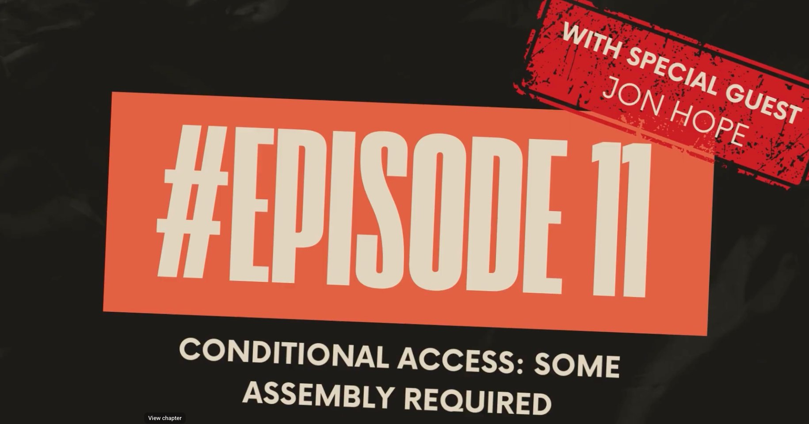

A few months back I built this tool to solve a problem I kept running into in the field. You pull down a CA Policy Analyzer export, stare at 30 policies in various states of report-only, and try to piece together what's actually covered. It tells you what you have. It doesn't tell you whether the right people are protected by the right controls.
I was recently a guest on the Not Another Tech Podcast, where we dug into exactly that problem. Before we get into the changelog, watch the episode. It covers how I think about CA at scale, some of the gaps I see repeatedly across customer environments, and a walkthrough of the tool itself.

During that conversation, Nate, Identity and SecOps Lead at Threatscape, raised something that stuck with me. He made the case that the real question isn't "do you have MFA policies" — it's "which personas have which controls enforced." Persona-based CA is how Threatscape structures their deployments, and it's a model that makes the coverage question answerable. Admins, standard users, guests, workload identities. Distinct populations with distinct risk profiles, and most tenants can't answer coverage questions per persona without manually working through every policy.
He also wanted the ability to import directly from a real-world CA framework on GitHub, rather than comparing against a generic template set. Both of those ideas are in this release.
The template library was rebuilt around the persona model. Templates are now organized by identity type so you can see whether each persona population (admins, standard users, guests, workload identities) has the expected controls in place. Matching logic was tightened and partial match scoring was recalibrated across all 39 templates. This is the foundation the new Personas tab builds on.
The feature that came directly out of Nate's feedback. A cross-referenced matrix of your major user personas against the core CA control categories: MFA enforcement, authentication strength, device compliance, sign-in risk, legacy auth block, and more. Shows exactly where you have coverage, where you have gaps, and where controls exist but are partial, per persona. No more inferring coverage from a flat findings list.
Pulls in one of the two community CA frameworks below and runs a structural diff against your tenant's current policies. Not a score, not a checklist — an explicit line-by-line comparison of what the framework requires versus what you have configured. Each gap is explained with remediation guidance. Particularly useful when you're doing a customer-facing review and need to show your work, not just hand over a number.
The scoring model was rewritten with three weighted pillars: CIS Benchmark Alignment (50 pts), Template Coverage (25 pts), and Configuration Quality (25 pts). CIS is the dominant factor because it's the most defensible baseline. The Configuration Quality pillar applies per-severity deductions with caps per category, so findings move the score meaningfully without collapsing it. The scorecard now shows which pillar is dragging the number and why.
The Baseline Gap tab loads directly from two of the most-referenced community CA frameworks. One click pulls the full policy set from GitHub and diffs it against your tenant. Both are built on Claus Jespersen's persona framework, both are actively maintained.
kennethvs/cabaseline202510
Community-maintained Zero Trust persona baseline, refreshed quarterly. The go-to reference for production-grade tenant hardening. Built around Claus Jespersen's framework structure with named exclusion groups, named locations, and a migration table.
↗ GitHubj0eyv/ConditionalAccessBaseline
Persona-based baseline aligned with Microsoft's Zero Trust guidance. Includes 67 CA policies, 33 exclusion groups, named location allow-lists, and a full DCToolbox-style restore bundle. Regularly updated, including Agent persona support added in recent versions.
↗ GitHubBoth frameworks are grounded in the same Claus Jespersen persona model that underpins the Personas tab, which means the diff is meaningful rather than structural noise. If your tenant is modeled after either of these baselines, or you're considering adopting one, the gap output maps directly to what you'd need to implement.
The old model fed everything into one bucket and returned a number. The new model separates CIS compliance, best-practice coverage, and configuration quality because they represent different things. A tenant can pass every CIS control and still have a Swiss cheese CA policy set — the three-pillar model surfaces that.
19 controls from CIS M365 v6.0. L1 controls carry 3× weight. The dominant pillar because CIS is the most defensible baseline in the field.
Priority-weighted across 39 best-practice templates. High-priority controls (MFA, legacy auth block, device compliance) contribute more than optional hardening.
Starts at 25. Per-severity deductions with category caps. Two critical findings won't zero the pillar, but they will move it hard.
Runs entirely in your browser. No install, no backend, no data leaves your machine. Connects to Microsoft Graph with your own delegated credentials and reads your CA policies directly. Minimum role to run it is Security Reader once an admin has granted tenant-wide consent.
Connect, run analysis, then start with the Personas tab if you want the coverage map, or Baseline Gap if you're doing a customer review. Dashboard gives you the score breakdown. CIS and Templates tabs sit behind the numbers.
Free. Browser-based. No install.
Connect your tenant in 30 seconds and get a full CA posture review. Your data never leaves your browser.